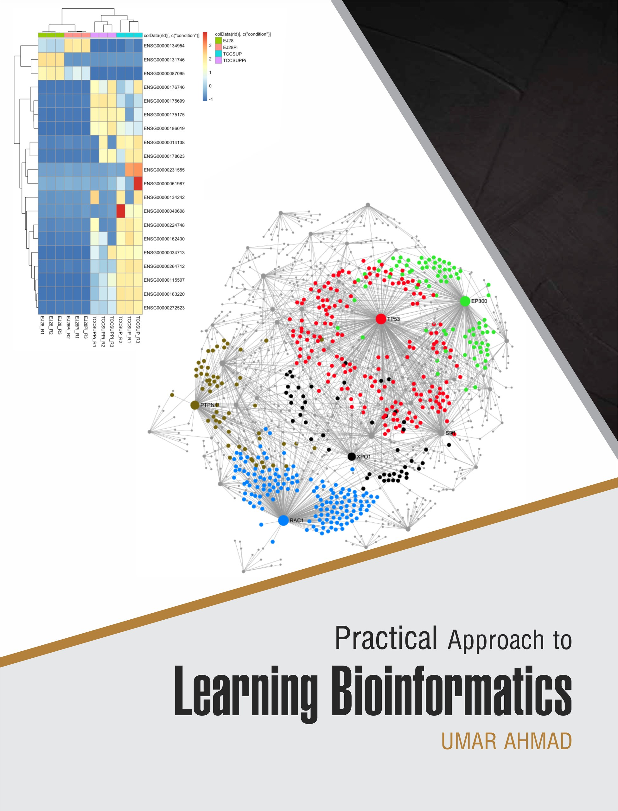

Practical Approach to Learning Bioinformatics
Welcome

This is the online edition of Practical Approach to Learning Bioinformatics.
Bioinformatics is learned the way laboratory work is learned: by doing it, making mistakes, and developing judgement about what the results mean. This book is built on that assumption. Every method it describes is demonstrated on data you can download, with code you can run, producing output that is shown exactly as it was produced. Nothing in these pages is illustrated with results that were never computed.
The book takes you from the first command you type in a terminal to a complete, reproducible analysis written up to the standard a journal would expect. Along the way it covers the archives where biological data lives, the algorithms that compare sequences, the Unix, Python and R skills that make large files tractable, the analysis of genomes and sequencing reads, protein structure, biological networks, statistics and machine learning for omics data, the clinical and public-health applications of all of it, and the ethical obligations that come with working on human genomes.
How to read this book
If you are new to the field, read Chapters 1 and 2, then work through Part 4 (the toolchain) before going further; the later chapters assume you can move around a filesystem and read code. If you already program, you can start at Chapter 3 and treat Part 4 as reference. The front matter chapter How to use this book explains the conventions, how to install the software and how to get the data.
Reproducing everything in the book
git clone https://github.com/babasaraki/practical-bioinformatics
cd practical-bioinformatics
conda env create -f environment.yml && conda activate pablb
python scripts/fetch_data.py # ~12 MB of example data from public archives
quarto render # rebuilds the whole bookEvery dataset used in the book is listed in data/MANIFEST.tsv with its source archive, accession and SHA-256 checksum, so you can confirm that the files you have are the files the book was written against.
Licence and contributing
The text and figures are released under the CC BY-NC-SA 4.0 licence; the code in the repository is MIT-licensed. Corrections, bug reports and suggestions are welcome through the issue tracker. Contributors are expected to follow the Contributor Covenant.
If the book is useful to you in teaching, the chapters are designed to map onto single sessions, and the exercises and worked solutions can be used directly.